Resumen de Estadística descriptiva
Definición de Estadística
La Estadística trata del recuento, ordenación y clasificación de los datos obtenidos por las observaciones, para poder hacer comparaciones y sacar conclusiones.
Conceptos de Estadística
Población
Una población es el conjunto de todos los elementos a los que se somete a un estudio estadístico.
Individuo
Un individuo o unidad estadística es cada uno de los elementos que componen la población.
Muestra
Una muestra es un conjunto representativo de la población de referencia, el número de individuos de una muestra es menor que el de la población.
Muestreo
El muestreo es la reunión de datos que se desea estudiar, obtenidos de una proporción reducida y representativa de la población.
Valor
Un valor es cada uno de los distintos resultados que se pueden obtener en un estudio estadístico. Si lanzamos una moneda al aire 5 veces obtenemos dos valores: cara y cruz.
Dato
Un dato es cada uno de los valores que se ha obtenido al realizar un estudio estadístico. Si lanzamos una moneda al aire 5 veces obtenemos 5 datos: cara, cara, cruz, cara, cruz.
Variables estadísticas
Variable cualitativa
Las variables cualitativas se refieren a características o cualidades que no pueden ser medidas con números. Podemos distinguir dos tipos:
Variable cualitativa nominal
Una variable cualitativa nominal presenta modalidades no numéricas que no admiten un criterio de orden.
Variable cualitativa ordinal o variable cuasicuantitativa
Una variable cualitativa ordinal presenta modalidades no númericas, en las que existe un orden.
Variable cuantitativa
Una variable cuantitativa es la que se expresa mediante un número, por tanto se pueden realizar operaciones aritméticas con ella. Podemos distinguir dos tipos:
Variable discreta
Una variable discreta es aquella que toma valores aislados, es decir no admite valores intermedios entre dos valores específicos.
Variable continua
Una variable continua es aquella que puede tomar valores comprendidos entre dos números.
Distribución de frecuencias
La distribución de frecuencias o tabla de frecuencias es una ordenación en forma de tabla de los datos estadísticos, asignando a cada dato su frecuencia correspondiente.
Diagrama de barras
Un diagrama de barras se utiliza para de presentar datos cualitativos o datos cuantitativos de tipo discreto.
Los datos se representan mediante barras de una altura proporcional a la frecuencia.
Polígonos de frecuencias
Un polígono de frecuencias se forma uniendo los extremos de las barras mediante segmentos.
También se puede realizar trazando los puntos que representan las frecuencias y uniéndolos mediante segmentos.
Diagrama de sectores
Un diagrama de sectores se puede utilizar para todo tipo de variables, pero se usa frecuentemente para las variables cualitativas.
Los datos se representan en un círculo, de modo que el ángulo de cada sector es proporcional a la frecuencia absoluta correspondiente.
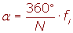
Histograma
Un histograma es una representación gráfica de una variable en forma de barras.
Se utilizan para variables continuas o para variables discretas, con un gran número de datos, y que se han agrupado en clases.
En el eje abscisas se construyen unos rectángulos que tienen por base la amplitud del intervalo, y por altura, la frecuencia absoluta de cada intervalo.
Medidas de centralización
Moda
La moda es el valor que tiene mayor frecuencia absoluta.
Se representa por Mo.
Se puede hallar la moda para variables cualitativas y cuantitativas.
Cálculo de la moda para datos agrupados
1º Todos los intervalos tienen la misma amplitud.
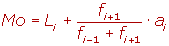
2º Los intervalos tienen amplitudes distintas.
En primer lugar tenemos que hallar las alturas.
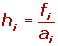
La clase modal es la que tiene mayor altura.
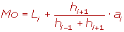
Mediana
Es el valor que ocupa el lugar central de todos los datos cuando éstos están ordenados de menor a mayor.
La mediana se representa por Me.
La mediana se puede hallar sólo para variables cuantitativas.
Cálculo de la mediana
1 Ordenamos los datos de menor a mayor.
2 Si la serie tiene un número impar de medidas la mediana es la puntuación central de la misma.
3 Si la serie tiene un número par de puntuaciones la mediana es la media entre las dos puntuaciones centrales.
Cálculo de la mediana para datos agrupados
La mediana se encuentra en el intervalo donde la frecuencia acumulada llega hasta la mitad de la suma de las frecuencias absolutas.
Es decir tenemos que buscar el intervalo en el que se encuentre 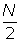.
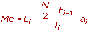
Media aritmética
La media aritmética es el valor obtenido al sumar todos los datos y dividir el resultado entre el número total de datos.
es el símbolo de la media aritmética.
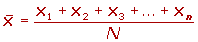
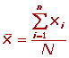
Media aritmética para datos agrupados
Si los datos vienen agrupados en una tabla de frecuencias, la expresión de la media es:
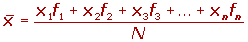
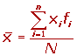
Medidas de posición
Cuartiles
Los cuartiles son los tres valores de la variable dividen a un conjunto de datos ordenados en cuatro partes iguales.
Q1, Q2 y Q3 determinan los valores correspondientes al 25%, al 50% y al 75% de los datos.
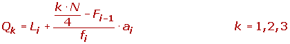
Deciles
Los deciles son los nueve valores que dividen la serie de datos en diez partes iguales.
Los deciles dan los valores correspondientes al 10%, al 20%... y al 90% de los datos.
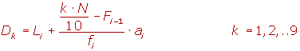
Percentiles
Los percentiles son los 99 valores que dividen la serie de datos en 100 partes iguales.
Los percentiles dan los valores correspondientes al 1%, al 2%... y al 99% de los datos.
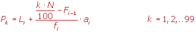
Medidas de dispersión
Desviación media
La desviación media es la media aritmética de los valores absolutos de las desviaciones respecto a la media.
La desviación media se representa por 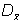
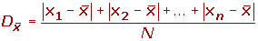
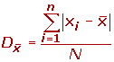
Desviación media para datos agrupados
Si los datos vienen agrupados en una tabla de frecuencias, la expresión de la desviación media es:
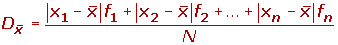
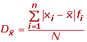
Varianza
La desviación típica es la raíz cuadrada de la varianza.
La desviación típica se representa por σ.
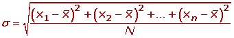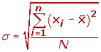
Desviación típica para datos agrupados
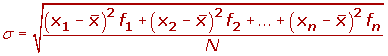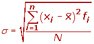
Para simplificar el cálculo vamos o utilizar las siguientes expresiones que son equivalentes a las anteriores.
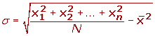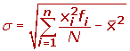
Desviación típica para datos agrupados
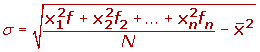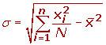
Desviación típica
La desviación típica es la raíz cuadrada de la varianza.
La desviación típica se representa por σ.
Desviación típica para datos agrupados
Para simplificar el cálculo vamos o utilizar las siguientes expresiones que son equivalentes a las anteriores.
Desviación típica para datos agrupados
Coeficiente de variación
El coeficiente de variación es la relación entre la desviación típica de una muestra y su media.
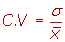
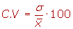
Puntuaciones típicas
Las puntuaciones típicas son el resultado de dividir las puntuaciones diferenciales entre la desviación típica. Este proceso se llama tipificación.
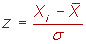